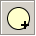
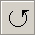
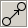
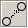
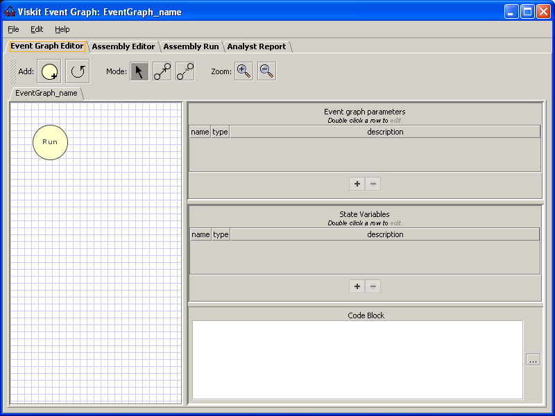

-  Adds a new event.
-  Adds a self-scheduling edge (loop-back).
 Turns on the select object function.
Turns on the select object function.-  Turns on the add Scheduling Edge function.
-  Turns on the add Dotted Edge function.
 Zooms in
Zooms in Zooms out.
Zooms out.
Visual construction of the event graph. Event nodes and edges can be created, edited, or deleted through this interface. in the figure below, the graph is shown in the left panel, and the event parameter information is shown in the right panels.

Screen Capture of Event Graph Tab after creating a new Event Graph.
See the tutorial for a description of how to create and edit event graphs.
Tools